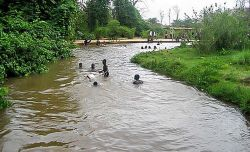

Guinguette

Situé à 15 kilomètres de la ville de Bobo,la Guinguette est un touristique interessant. Elle est un plan d'eau naturel formant une sorte de piscine sur le cours de la rivière de Kou.Connue des habitants et des visiteurs de Bobo-Dioulasso,la Guinguettedoit son nom au premier classement de la forèt du Kou en 1941 qui s'étend sur près de 115 hectares. Source naturelle entourée d'une végétation luxuriante,elle constitue un cadre idéal de détente,de pique-nique et de baignade.C'est une forèt très riche en végétation qui abrite plusieurs ressources naturelles.
Toutefois,ce site n'est pas accessible en saison pluvieuse(juin à octobre).